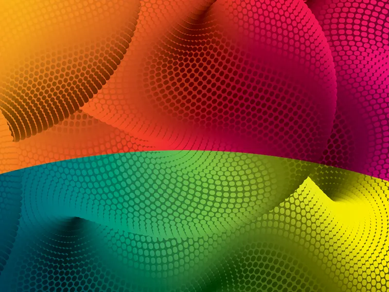
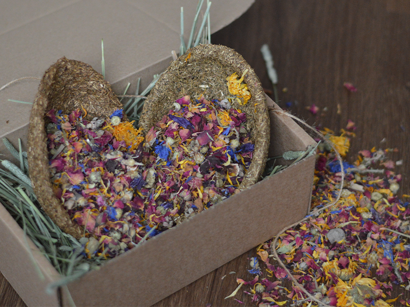
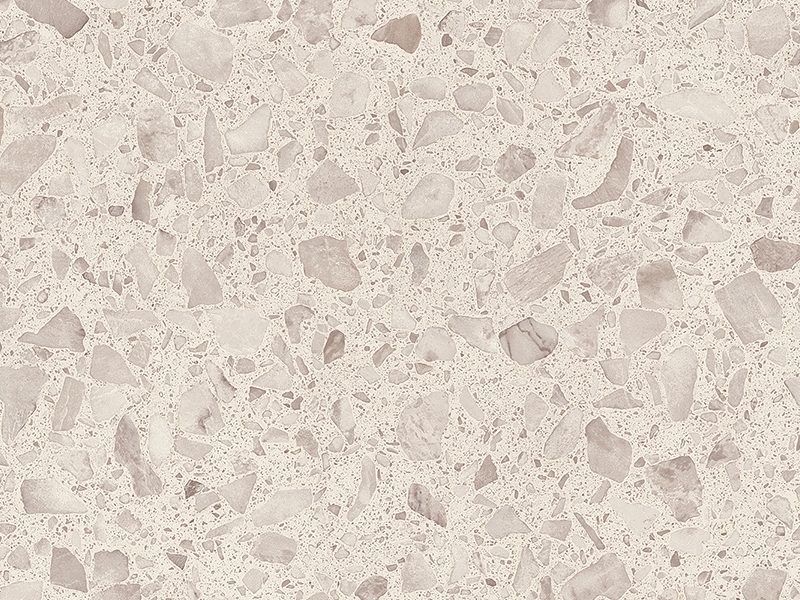
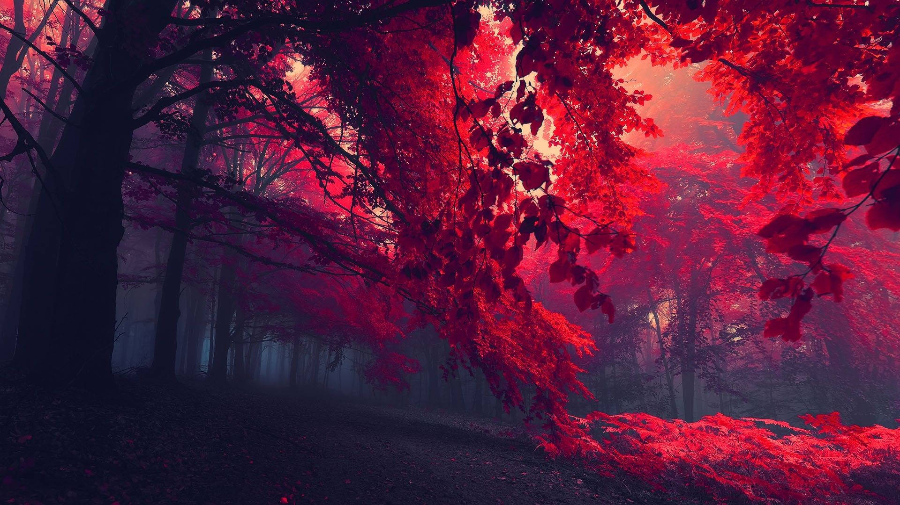

Робота з зображеннями
1. Абзац з фоновим зображенням
Зображення повторюється (background-repeat: repeat)
для створення текстури. розмір текстури: 256x256px або 512x512px.
2. Блок з фоновим зображенням
Фонове зображення
3. Декілька фонових зображень
Два фонових зображення: overlay + основний фон
4. Вставка зображень з різними рамками



5. Блок з border-image
Рамка з зображення
6. Блок з тінню та закругленими кутами
Цей блок демонструє box-shadow та border-radius.
Використовується складна тінь з кількох шарів.
7. Responsive зображення
